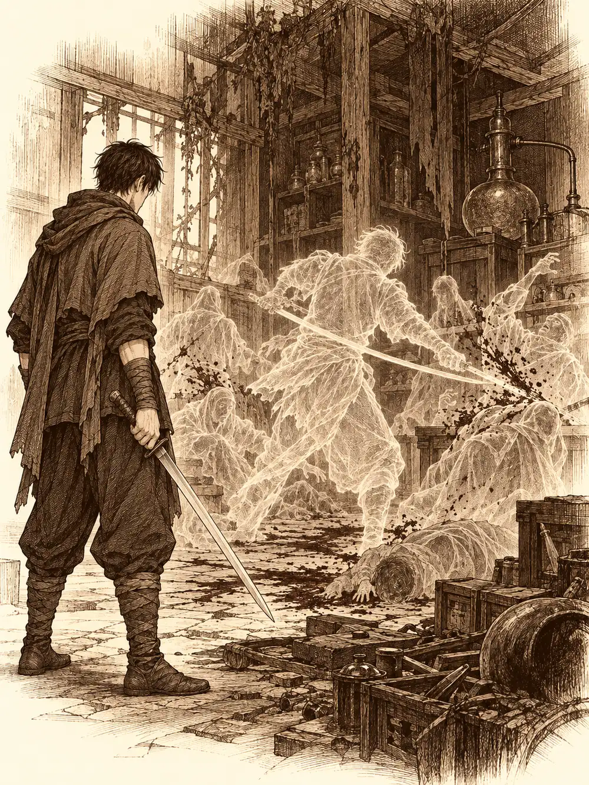

Capítulo 63
Laboratorio experimental
Libro IV · Los guardianes del Oeste y del Este
Shiru se había hecho un cuerno nuevo. Era de acero, con una bisagra, y lo llevaba atado con correas al muñón del cuerno que le habían arrancado; al otro, el que le quedaba, le había limado la punta para que los dos se parecieran un poco. Le colgaba algo torcido. Él aseguraba que estaba bien sujeto.
"¿Quién te ha hecho eso?", le preguntó Ermitaño.
"El mayor chapucero de todo Kuroto. Cuidado con lo que dices, que a ese chapucero le gusta mucho el pan".
Desayunaban en la taberna de Anko antes de salir de expedición. Los días anteriores habían recorrido las montañas que rodeaban la aldea de los aarakocra buscando el templo: habían encontrado grutas que no llevaban a ninguna parte y otra donde habían tenido que matar a un oso gigante, del que todavía comían. Les quedaban un par de caminos por explorar.
Cada uno había llenado aquellos días con su oficio. Ikari practicaba hechizos nuevos lejos del pueblo, de noche, para no asustar a nadie, y cosía remaches en cuero sin material bueno para hacer nada serio. Jin buscaba minerales y un sitio donde dormir que no fuera aquella taberna. Shiru había forjado tanto para hacerse el cuerno que ya se sentía capaz de fabricar armas y armaduras de verdad. Ermitaño ayudaba a la herbolaria del pueblo y aprendía nuevas oraciones en comunión con su diosa.
Jin no conocía al clérigo. Ermitaño se presentó: no tenía nombre propio, se dedicaba a sanar y su clan había sido exterminado hacía mucho. Por eso se había unido a los cazadores. Jin le estrechó la mano. Alguien comentó que por fin había quien firmaba el contrato.
Antes de salir, Ermitaño cruzó la calle hasta la tienda de la herbolaria y le preguntó si necesitaba alguna hierba de las montañas. La mujer le dijo que no, pero que si encontraba alguna que le pareciera interesante, se la trajera.
El camino fue tranquilo hasta las montañas. Algún lobo los siguió un rato desde lejos y luego se retiró. Después empezaron los senderos escarpados, las cornisas donde había que avanzar pegados a la pared, los rodeos. En uno de ellos, ya de noche, encontraron una puerta de metal.
Estaba reventada de dentro hacia fuera, oxidada y medio enterrada, y daba a algo construido en el interior de la montaña. Alguien hizo brotar una luz mágica sobre la armadura de Shiru. Al cruzar el umbral se levantó una nube de polvo tan espesa que tuvieron que taparse la boca. Nadie había pisado aquel suelo en mucho tiempo.
Algunas antorchas de llama mágica seguían encendidas en las paredes; otras soltaban chispas, a punto de apagarse. Por el suelo se movían dos criaturas pequeñas, como plumeros con patas, que iban de un lado a otro limpiando el polvo y dejándolo caer otra vez por detrás. Alguien los reconoció y dijo que eran inofensivos: comían polvo y cagaban polvo.
La primera sala estaba llena de estanterías y de tarros, la mayoría rotos en el suelo. En los que quedaban enteros había trozos de algo, ennegrecidos y podridos. Se acercaron a mirar. Eran pedazos de carne. De bestias. De humanoides.
Una puerta de metal tenía un candado enorme. Shiru lo agarró con las dos manos y, con ayuda, tiró hasta que el candado reventó.
Era un archivo. Había papeles y libros por todas partes, la mayoría destrozados, ilegibles. Jin se puso a leer lo que podía. Las marcas eran inconfundibles: aquello había sido un lugar de los sectarios de Otakemaru.
Siguió leyendo, y de pronto se quedó quieto. El libro se le cayó de las manos.
Los demás lo vieron palidecer, cosa que nunca le habían visto hacer. Shiru le ofreció una croqueta de las suyas por si era una bajada de azúcar.
"Se me acaba de quitar el hambre para mucho tiempo".
Había leído un nombre. El proyecto Humare Cata, o algo así, porque la tinta estaba medio borrada. No dijo qué era. Solo dijo que era algo del pasado que no quería volver a encontrarse, y que ahora tenía otra razón, una de peso, para matar a todos aquellos sectarios.
Recogió el libro del suelo y le prendió fuego. Había más volúmenes con el mismo nombre en el lomo.
"Cuando nos vayamos, este sitio arde".
La sala siguiente parecía un despacho, con un escritorio, fogones apagados, jaulas y una mesa llena de material de alquimia tirado y podrido. Ikari notó algo húmedo que le caía en el hombro. Una baba.
Miró hacia arriba.
Colgadas del techo, como arañas, había tres criaturas. Estaban pegadas a la piedra por las palmas de las manos y los pies, y tenían unas lenguas larguísimas, llenas de pústulas, que salieron disparadas hacia los cazadores antes de que nadie más hubiera levantado la vista. Ikari fue el único que no se dejó sorprender.

Las lenguas golpeaban desde lejos y escupían algo ácido. Las criaturas tenían garras, y el olor que soltaban daba náuseas y envenenaba a quien lo respiraba demasiado tiempo. Shiru derribó a una del techo y la hizo atacar a otra en lugar de a él. Jin y Ikari alternaban acero y fuego, y Ermitaño golpeaba con su martillo cuando no estaba curando a alguien.
Cuando la última cayó, entendieron por qué olían así. Estaban hechas de excrementos. Al morir, se deshicieron, y los cazadores se quedaron hundidos hasta los tobillos en aquello.
Buscaron papeles en aquel despacho. Nadie encontró nada útil.
En la siguiente habitación, Jin sintió que se le revolvía el estómago antes de entender por qué. No había estado nunca allí. Pero había estado en un lugar como aquel, en otro laboratorio, donde habían experimentado con él. Los aparatos, la disposición de las mesas, el tubo enorme de metal en el centro, con restos de un líquido seco en el fondo. Le recorrió un escalofrío que todos vieron.
"Llevo once años sin sentir esto".
Se acercó al contenedor. Estaba vacío y destrozado. Hacía mucho que nadie lo usaba.
Miraron al techo por si acaso, y arriba no había nada. Lo que encontraron estaba en el suelo, detrás de las mesas: un brazo. Cortado de un tajo limpio. Más allá había una cabeza, y otro brazo, y torsos. Eran sectarios del culto, descuartizados, y llevaban allí pudriéndose tres o cuatro meses.
Una malicia muy fuerte llenó la sala de pronto. A todos se les erizó el vello.
Detrás de las mesas apareció una figura translúcida, como el eco de un recuerdo. Un hombre con una espada. Ante sus ojos, la figura empezó a moverse entre fantasmas de los sectarios muertos, cortando, y los fantasmas caían como habían caído. Era una matanza que ya había ocurrido, repitiéndose.
Jin lo reconoció.
Era su hermano.
Los demás no sabían quién era aquel hombre. Solo vieron que, al terminar con los sectarios, el eco se volvía hacia ellos y levantaba la espada.
El eco cargaba de frente, golpeaba con una luz radiante que quemaba, y cuando se sentía en peligro adoptaba una postura extraña, la postura de la grulla, en la que casi ningún golpe le entraba.
Ermitaño sostenía la vida de sus compañeros con su magia. Ikari silbó, y de las sombras de la habitación salió su perro, y luego usó su anillo para acelerar a los demás. Shiru recibió golpe tras golpe; el eco parecía obsesionado con él. Pero cada vez que lo atacaban, el cervan devolvía el golpe con su bastón, y algunas de esas respuestas fueron brutales.
Jin intercambiaba ataques con su hermano. Golpe tras golpe se estrellaba contra aquella postura de grulla. Luego dejó de mirarlo a la cara y atacó otra vez. Le acertó.
El eco se deshizo en el aire.
En el suelo, donde había estado, quedó una espada de dos manos.
Alguien le pidió que no la tocara. Que podía tener cualquier magia. Jin la cogió igualmente.
Algo le recorrió el cuerpo de arriba abajo, una corriente fría y caliente a la vez. Y supo su nombre sin que nadie se lo dijera. Se llamaba Yasuna.
Era una hoja larguísima, curva, más una katana para dos manos que un mandoble. Quedó unida a él en el mismo instante. Cuando acertaba un golpe perfecto, absorbía magia y se la devolvía a su portador en forma de vida. Y si Jin la movía de cierto modo, entraba en un estado en el que podía combinar los hechizos con los golpes de espada como si fueran la misma cosa.
Sintió también que aquella espada la había empuñado su hermano.
Alguien dijo que entonces el hermano debía de estar muerto. Que nadie suelta una espada así si está vivo. Pero lo que habían visto era solo un eco, el recuerdo de una matanza que su hermano había hecho allí dentro. No demostraba nada más. Jin no dijo si lo creía vivo o muerto.
Revisaron la sala antes de irse. Por lo poco que pudieron entender, allí se habían hecho experimentos con personas. Había máscaras, quizá para enganchar algo a la cara de alguien. No supieron reconstruir para qué.
Jin buscó un barril de aceite y lo vació por el suelo.
"Tenéis treinta segundos".
Ikari aprovechó ese tiempo para rebuscar en el archivo. Encontró unas cuantas hojas con el mismo nombre del proyecto y se las guardó en la ropa sin entenderlas. Antes de salir sacaron también a las dos criaturas del polvo, espantándolas hacia la puerta. Ellas no tenían la culpa de nada.
Jin prendió el fuego.
Fuera, en la ladera, los dos pequeños yokai se quedaron quietos, desconcertados, delante de la tierra húmeda del monte, que no era polvo. Detrás de ellos el laboratorio empezaba a arder, y las llamas salían por la puerta de metal reventada y lamían la roca. El templo no estaba allí. Habían seguido el camino equivocado.
Bajaron la montaña de noche. Ermitaño, Ikari y Shiru iban hablando de lo que habían visto sin entender gran cosa. Jin caminaba delante, solo, con Yasuna a la espalda.